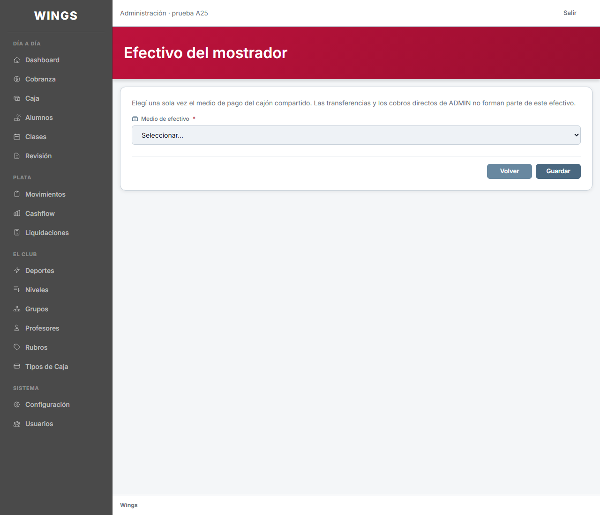
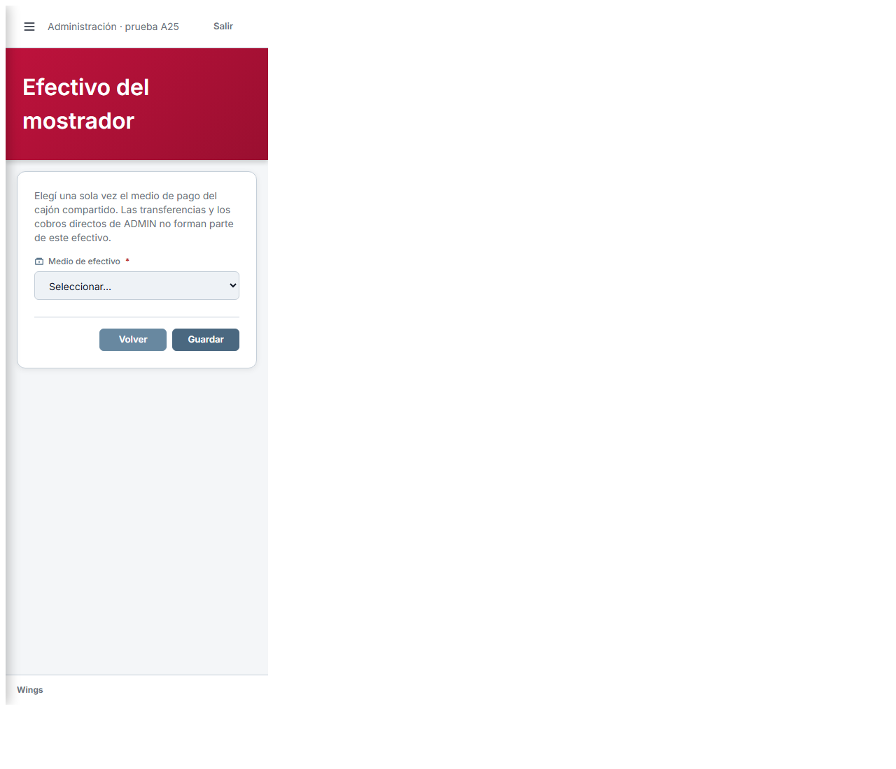
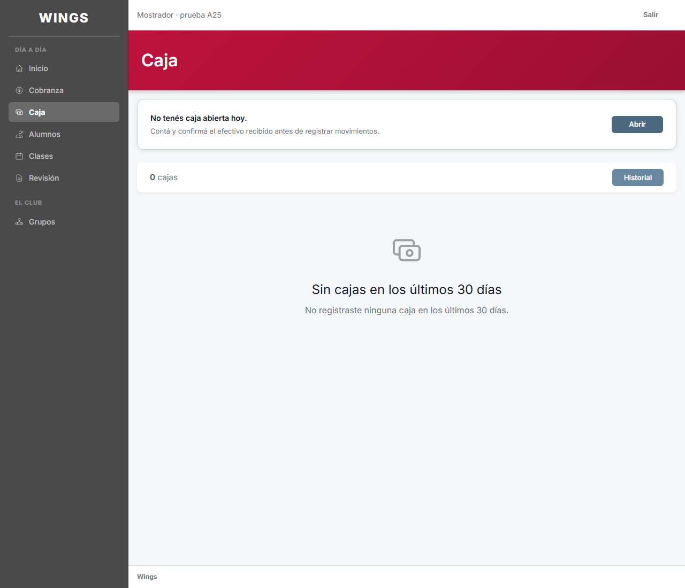
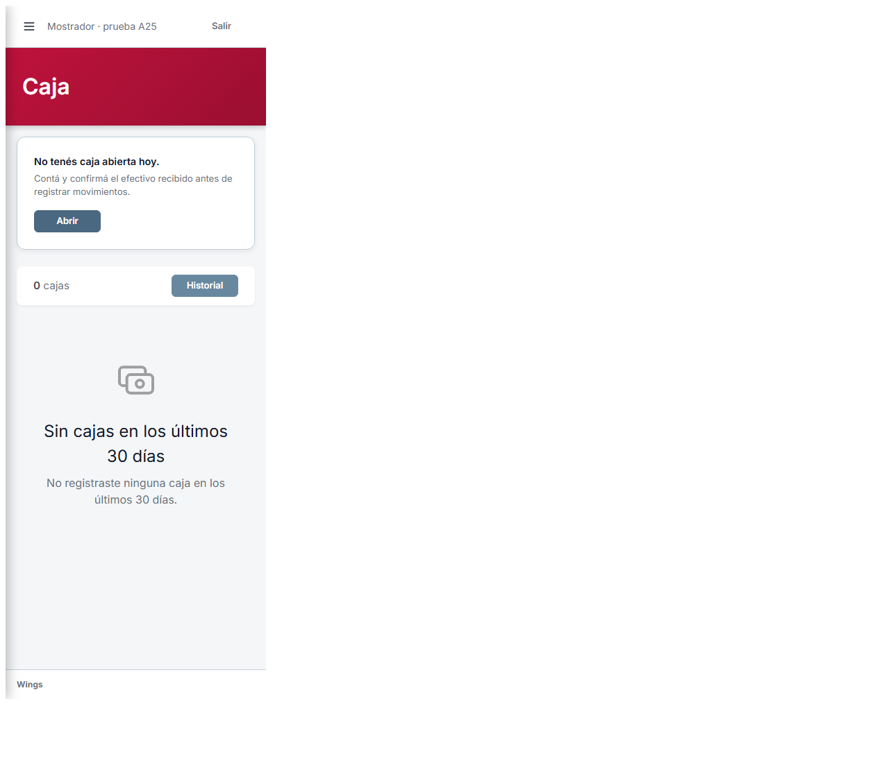
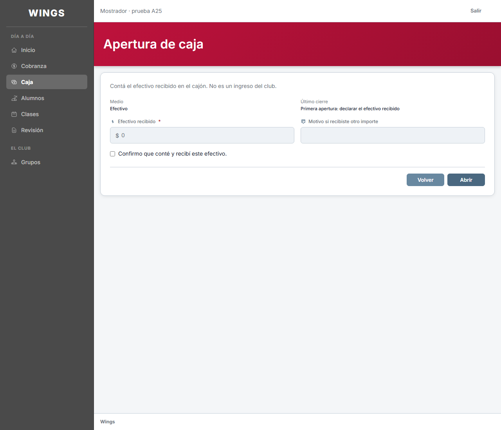
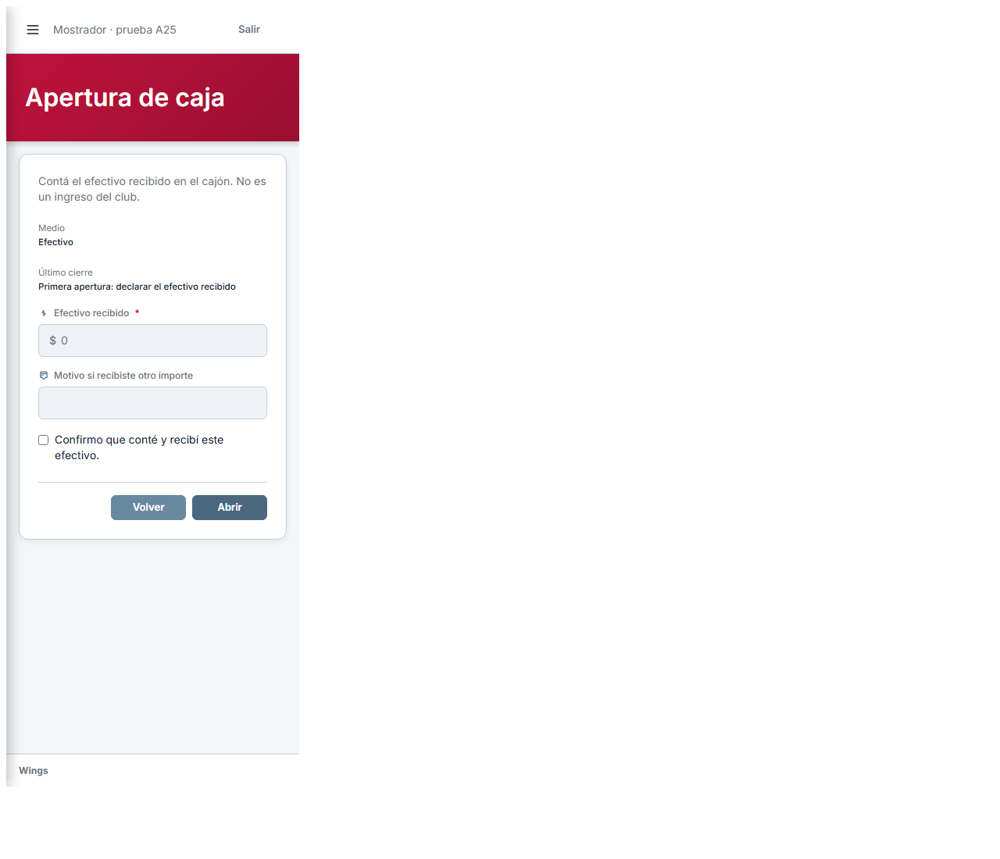
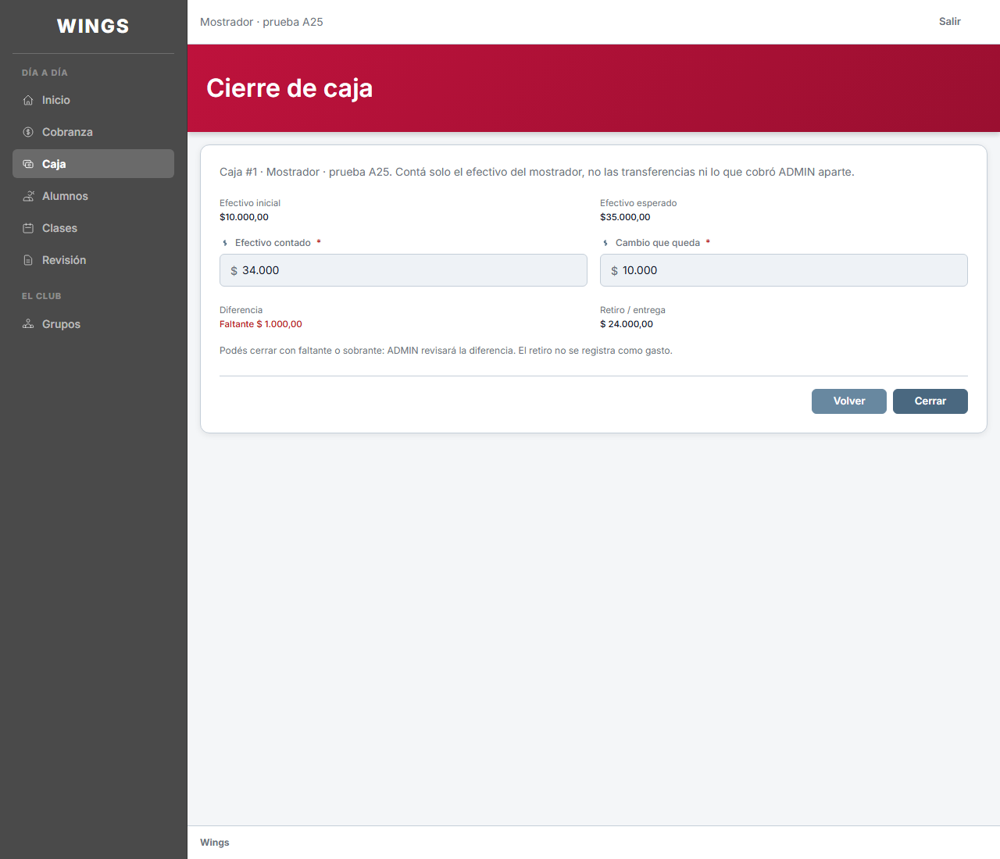
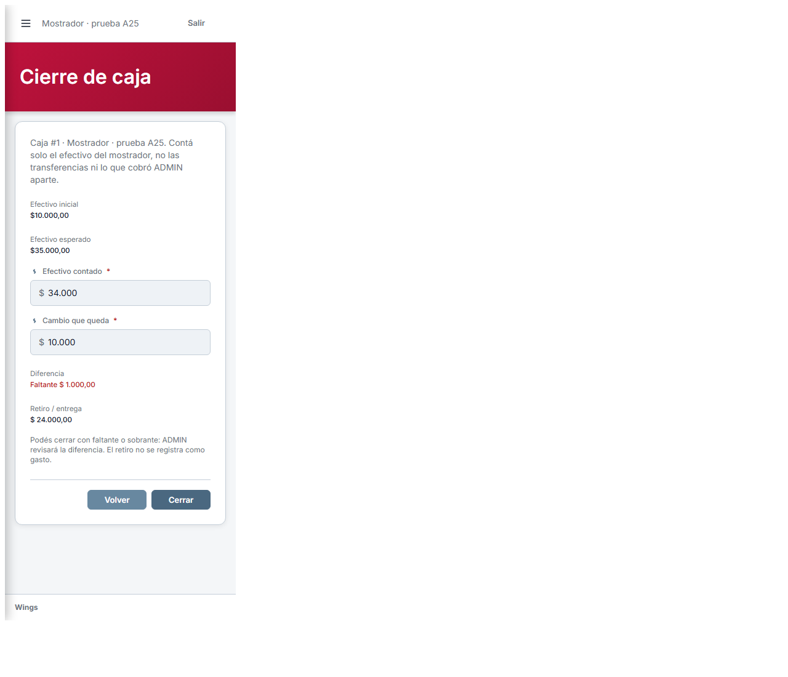
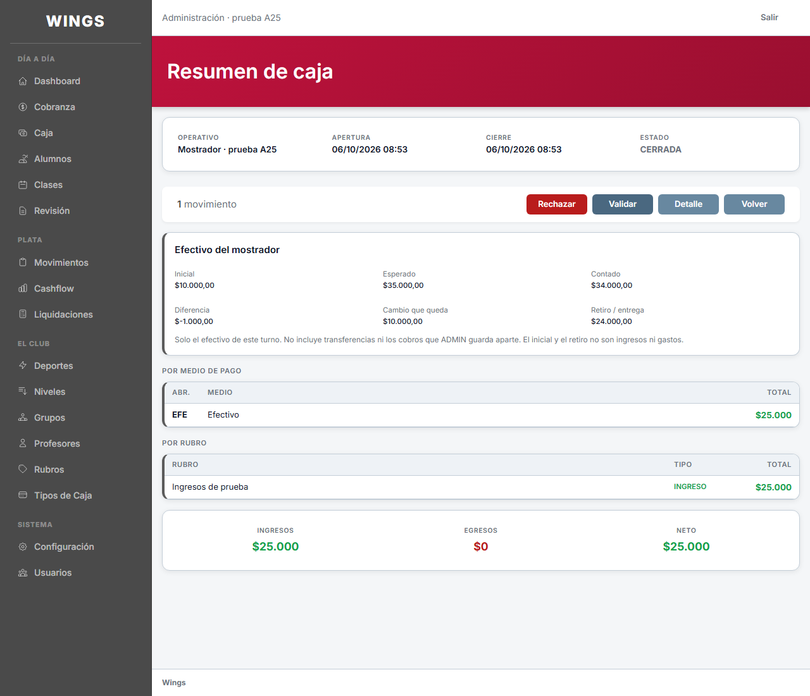
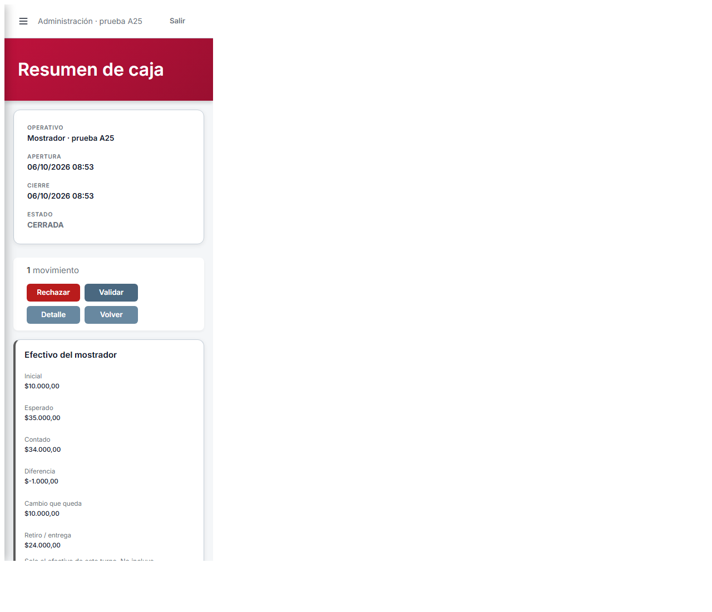

06/10/2026 · v1 · Codex CAB. Datos ficticios en base propia. Diseño pendiente de aprobación; no desplegado.
Respuestas reales de Laravel capturadas en Chrome, no maquetas. A 375, la pantalla está dentro de un marco de ancho exacto.









